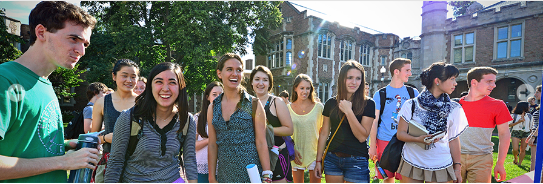

Resources for Transfer Students
| Academics | Research | Campus Life |
|---|

Discovering WashU
- A private, independant university located in St. Louis, WashU is the world's leading memebrs in promoting high quality research, teaching, and learning.
- Founded: 1853
- Chancellor: Mark S. Wrighton, 1995–Present
- Motto: Per Veritatem Vis (Strength Through Truth)
Resources for Transfer Students
- transfer students organization: for networking, academics information exchange, career development, etc.
- Academic advisers: great way to quickly learn about the right classes to take, and academic programs to pursue.
- School activities: volunteer, forums, tech talks, career fair, etc.
- Residential college: great way to quickly know people around you.
Plans for new school
"I transferred because the city of my previous college does not provide sufficient job opportunities for my major. Now that I have transferred to NYU, I hope I will soon get an internship in Investment Banking. "
------Richard, class of 19
""I really like the free spirits of liberal arts college. I hope I will enjoy my time with my new friends.""
------Annie, class of 17
Dual Degree Program
Washington University cooperates with other colleges and universities to offer the dual degree program, in which students finish half of their undergraduate studies in another school, and do the other two years at WashU. Dual degree program is a great way to obtain comprehensive interdisciplinary knowledge and also a good chance to expand social circle and horizons.
For more information, please go to English Corner
| Contact us | About us | Advice & Suggestions |
|---|